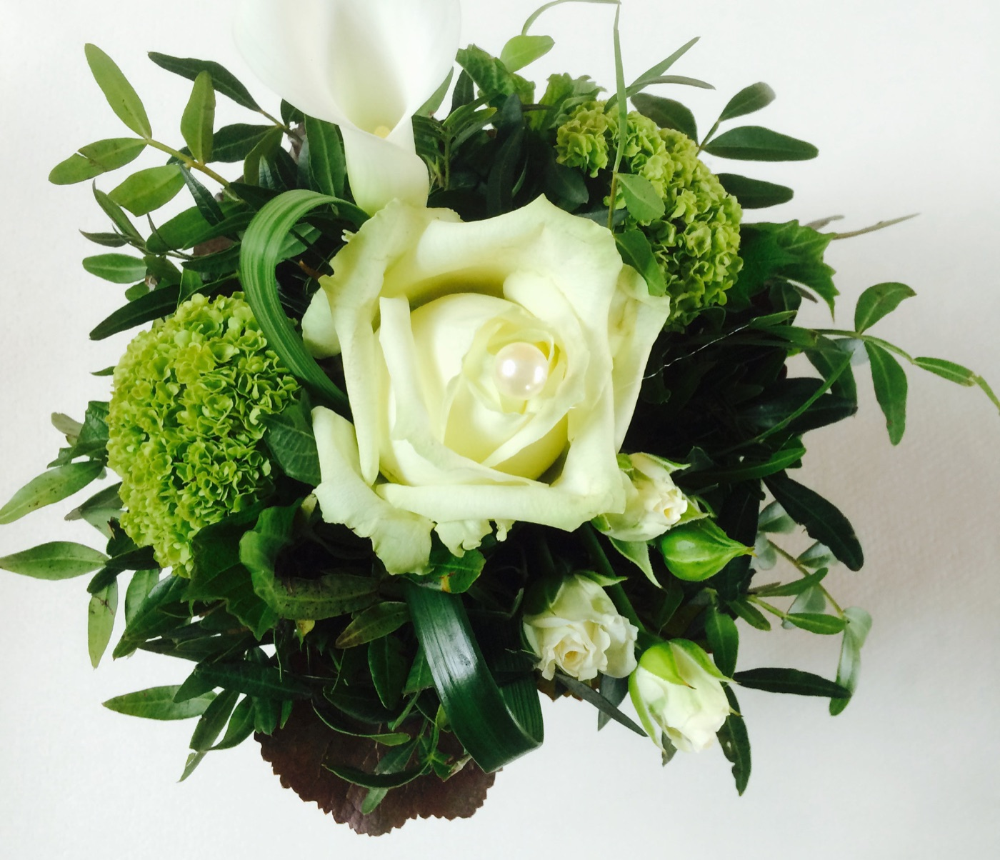
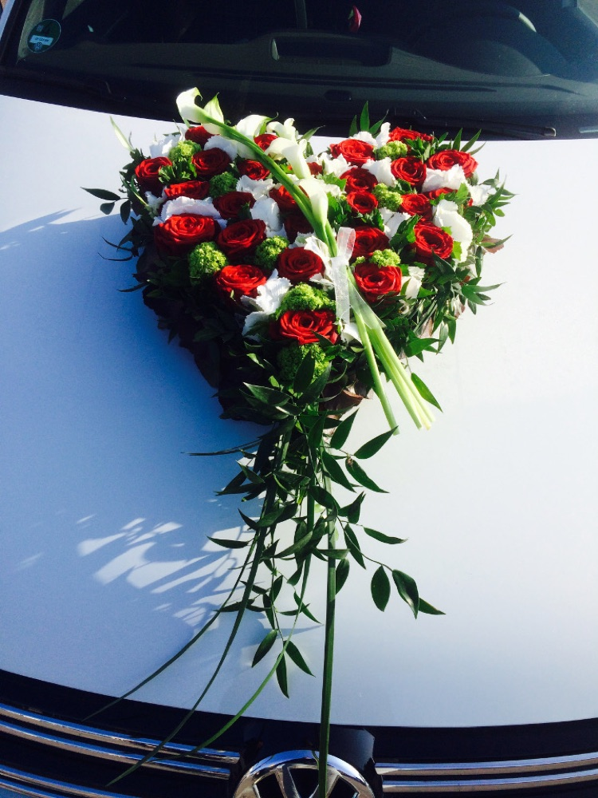
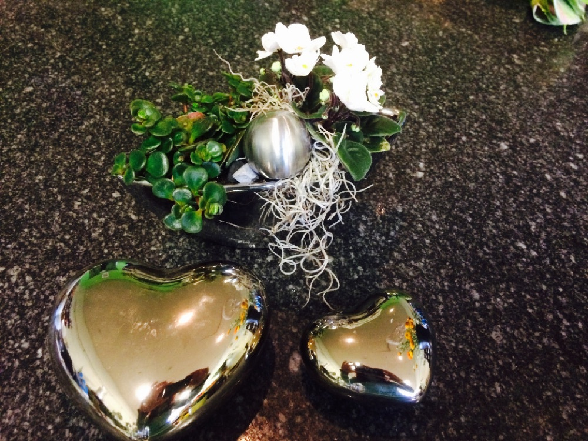
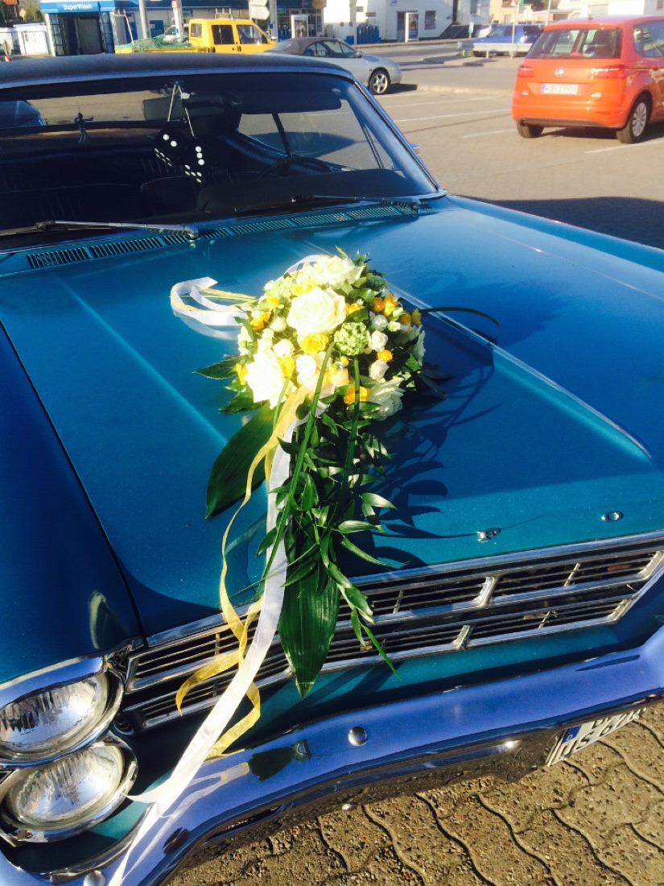

Connys Blumen Atelier · Floristik
Für jeden Anlass die passenden Blumen.
Wir freuen uns über Ihr Interesse an unserem floralen Angebot. Connys Blumen Atelier fertigt zu jedem Anlass die passende Blumen- und Pflanzendekoration — frisch gebunden, der Saison entsprechend und ganz nach Ihren Wünschen.
Seit 1993
Mehrjährige Erfahrung und Freude am Beruf — Ihr Blumenfachgeschäft in Weyhausen.
Ausgebildete Floristen
Unser Team besteht ausschließlich aus ausgebildeten Floristen — kompetent und persönlich beraten.
Frisch & saisonal
Wir arbeiten mit der Natur und achten auf besonders saisonalen Blumenschmuck.
Lieferung & Bepflanzung
Pünktliche Lieferung zum Wunschtermin sowie Balkon-, Terrassen- und Kübelbepflanzung.

Willkommen
Mit Blumen Freude bereiten — in Weyhausen.
Erleben Sie bei uns in Weyhausen die Möglichkeit, mit Blumen und Pflanzen Freude zu bereiten – als Geschenk oder für das eigene gemütliche Zuhause.
Bei uns finden Sie garantiert das passende Angebot und den richtigen Service. Wir bieten neben Hochzeits- und Trauerfloristik auch Blumen und Gestecke für Familienfeiern, Jubiläen, Taufen und andere Feierlichkeiten.
Wir freuen uns, bald von Ihnen zu hören!
Entdecken
Was wir für Sie tun
„Wir möchten, dass Sie sich lange an Ihrem Blumenschmuck erfreuen können – darum finden Sie bei uns nur frischeste und schönste Produkte und Materialien.“
Connys Blumen Atelier
Öffnungszeiten
Wann Sie uns erreichen
Auch während des Urlaubs sind wir für Sie zu unseren bekannten Öffnungszeiten da. Öffnungszeiten zu Feiertagen werden zeitnah bekannt gegeben.
- Montag08:30 – 18:00
- Dienstag08:30 – 18:00
- Mittwoch08:30 – 18:00
- Donnerstag08:30 – 18:00
- Freitag08:30 – 18:00
- Samstag08:00 – 13:00
- Sonntaggeschlossen